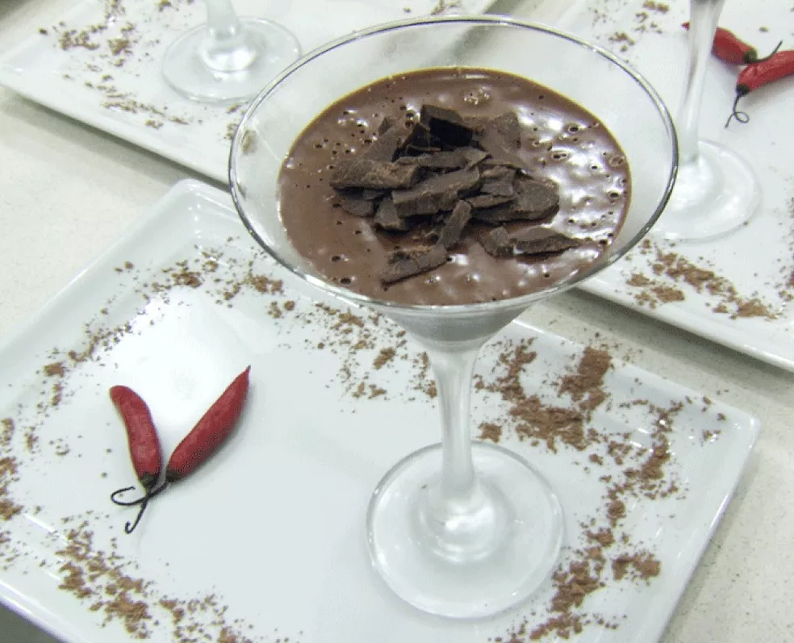

As 5 melhores Receitas para os Amantes de Comidas Apimentadas
Site Feito pelo Aluno: Gabriel Schweder Piske
Confira as Receitas que serão Apresentadas
Geleia de tomate com pimenta
Mousse de chocolate com pimenta
Curry de Peixe
Frango Tandoori
Chocolate quente com laranja e pimenta
Se você é do Time que tem um estômago forte, e adora comidas picantes, esse site é pra você.
Separamos a Dedo as melhores Comidas Pra quem gosta de suar, e de sentir os arderes da vida
Geleia de tomate com pimenta
Geleia de Pimenta
Lista de Ingredientes
4 tomates italianos maduros
4 pimentas dedo-de-moça
1/2 xícara (chá) de açúcar
1/2 xícara (chá) de açúcar mascavo
1/2 xícara (chá) de vinagre de vinho tinto
1 colher (chá) de pó de café
Caldo de 1 limão-taiti
Sal a Gosto
Modo de Preparo
Lave e seque as pimentas dedo-de-moça.
Corte cada uma no sentido do comprimento, descarte as sementes e pique em cubinhos.
Descasque e pique fino o dente de alho.
Para tirar a pele dos tomates: leve uma panela média com água ao fogo alto. Enquanto isso, lave e corte um x na base de cada tomate e prepare uma tigela com água e gelo.
Assim que a água ferver, coloque os tomates; quando a pele começar a soltar, retire com uma escumadeira e transfira os tomates para a tigela com água e gelo – o choque térmico faz com que a pele se desprenda.
A partir do corte em x, puxe e descarte a pele dos tomates. Numa tábua, corte os tomates ao meio e descarte as sementes. Pique as metades em cubinhos e transfira para uma panela média.
Adicione o alho e a pimenta aos tomates. Junte o restante dos ingredientes, tempere com uma pitada de sal e misture.
Leve para cozinhar em fogo médio. Assim que ferver, abaixe o fogo e deixe cozinhar por cerca de 25 minutos com a tampa entreaberta, mexendo de vez em quando para não grudar no fundo.
Desligue o fogo e bata com um mixer (ou no liquidificador) até a geleia ficar lisa. Transfira imediatamente para um pote de vidro. Quando esfriar, tampe e armazene na geladeira por até 15 dias. Essa geleia é ótima para comer com pães e queijos.
Mousse de chocolate com pimenta

Mouse de Chocolate com Pimenta
Lista de Ingredientes Mousse
120ml de leite
1 colher (sopa) cacau em pó
30g de açúcar
2 gemas de ovo
Pedaços de chocolate meio amargo
120ml de creme de leite fresco
Morango
Açúcar de confeiteiro
Folha de hortelã
Lista Ingredientes da Calda
120ml de cranberry juice
60g de açúcar
1 pequeno pedaço de pimenta malagueta ou dedo de moça
5 sementes de cardamomo
100ml de suco de laranja
Modo de Preparo
Coloque o leite em uma panela para aquecer com a colher de cacau em pó.
Mexa bastante até dar uma leve fervura. Em um outro recipiente, coloque as duas gemas de ovo e acrescente uma pequena quantidade do chocolate quente.
Mexa e volte com a mistura para a panela onde está a outra parte do chocolate quente. Misture o preparo até engrossar e ficar como um creme.
Em seguida, inclua os pedaços de chocolate até derreter por completo. Desligue o fogo e aguarde a mistura ficar totalmente fria.
Em outro recipiente, bata o creme de leite até que fique no ponto de chantilly.
Quando finalizar, misture o chocolate frio com o chantilly batido. Coloque a mousse nas taças e leve-as para a geladeira por duas ou três horas.
Coloque o cranberry juice em uma panela junto com o açúcar e as sementes de cardamomo. Ao misturar, adicione o suco de laranja.
Deixe ferver bem até se reduzir pela metade formando a calda.
Para finalizar, coloque a calda sobre a mousse e pedaços de morango, salpicando com açúcar de confeiteiro e uma folha de hortelã.
Curry de Peixe
Cury de Peixe
Lista de Ingredientes
600 g de peixe (namorado ou cação)
200 g de camarões limpos
1 pedaço de gengibre de uns 4 cm
2 cenouras
2 abobrinhas
½ cebola
1 dente de alho
50 g de manteiga
300 ml de leite de coco
200 ml de iogurte natural
2 colheres (café) de curry
1 colher (sopa) de coco ralado
Sal e pimenta-do-reino a gosto
Modo de Preparo
Pique finamente o alho e a cebola, corte as cenouras e as abobrinhas em palitos bem finos e longos, e o gengibre, em lâminas bem finas.
Em uma caçarola, derreta a manteiga em fogo médio e refogue o alho, a cebola e o gengibre por 3 minutos.
Adicione o curry, o sal e a pimenta e deixe cozinhar por mais 2 minutos, mexendo sempre.
Despeje, pouco a pouco, o leite de coco e deixe ferver.
Acrescente o peixe, as cenouras e as abobrinhas e deixe cozinhar em fogo baixo por 10 minutos.
Em seguida, adicione os camarões e deixe por mais 5 minutos.
Termine acrescentando o iogurte e acertando o sal.
Sirva bem quente, com um pouco de coco ralado sobre os camarões.
Frango Tandoori
Frango Tandoori
Lista de Ingredientes
1 e ¼ kg de frango desossado e cortado em pedaços
3 colheres (sopa) de suco de limão natural
1 colher (sopa) de sal
2 xícaras (chá) de iogurte natural, divididas
3 colheres (sopa) de cominho em pó
2 colheres (sopa) de semente de coentro em pó
1 punhado de coentro fresco picado
2 colheres (chá) de páprica
½ colher (chá) de cúrcuma em pó
1 colher (sopa) de sal
1 colher (chá) de pimenta-do-reino moída na hora
6 dentes de alho amassados
Modo de Preparo
Faça pequenos cortes na carne do frango para que absorva mais o tempero.
Misture o suco de limão com o sal e passe no frango.
Coloque o frango em uma travessa rasa.
Em um processador de alimentos, junte metade do iogurte, o cominho, o coentro fresco, as sementes de coentro em pó, a páprica, a cúrcuma, o sal, a pimenta e o alho. Processe, até obter um molho.
Transfira para uma vasilha e adicione o iogurte restante.
Jogue este molho sobre o frango e deixe-o marinando na geladeira por no mínimo 8 horas.
Pré-aqueça a grelha ou churrasqueira em temperatura média Retire o frango da marinada e jogue fora o molho.
Deixe o frango na grelha por 30 a 45 minutos, virando-o com frequência para que não queime de um lado só. Os pedaços menores vão ficar prontos primeiro. Sirva a seguir.
Chocolate quente com laranja e pimenta
Chocolate quente com laranja e pimenta
Lista de Ingredientes
70g de chocolate amargo (70% de cacau)
1/2 litro de leite integral
2 gemas
2 colheres (sopa) de açúcar
4 colheres de suco de laranja (2 colheres podem ser substituídas por cointreau ou licor de laranja)
Raspas da casca de 1/2 laranja
Pimenta rosa
Modo do Preparo
Leve o leite e o chocolate ao fogo em uma panelinha.
Misture um pouco até que o chocolate se derreta.
Em uma tigela, bata bem as gemas com o açúcar até que o amarelo fique clarinho.
m uma tigela, bata bem as gemas com o açúcar até que o amarelo fique clarinho.
E Quando o leite estiver quase fervendo, adicione a gemada e mexa bem com um batedor de arame.
Continue batendo em fogo baixo até que fique bem cremoso, por cerca de três minutos.
Acrescente o suco de laranja ou cointreau, as raspas de laranja e desligue o fogo.
Para que fique com uma espuma deliciosa, bata bastante com o batedor antes de servir. Decore usando pimenta rosa.